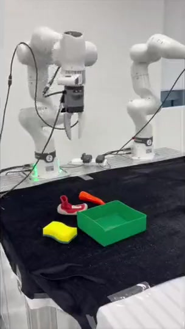
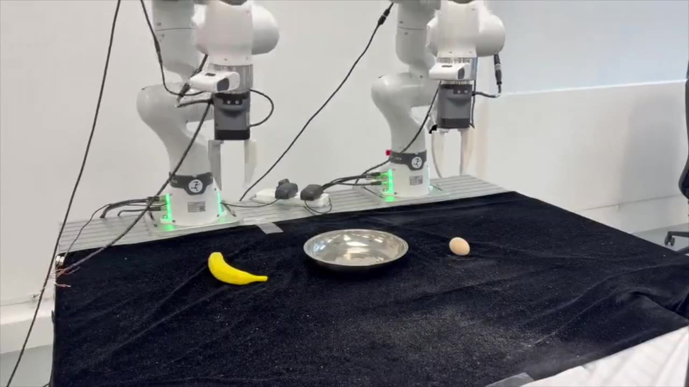
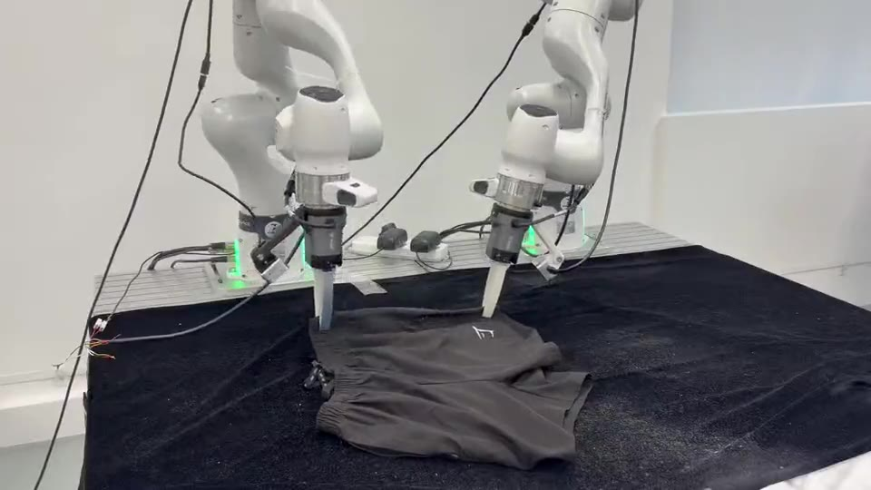

82.6%
LIBERO-Plus
Reported Total success rate, 7.6 percentage points above the matched Qwen3VL-OFT baseline.
VLAct project pagePreprintAugust 2026
Core Contributors Senqiao Yang†, Chengyao Wang†, Yuxin Chen, Zixuan Wang, Longxiang Tang, Haokun Gui, Jinhui Ye, Changsheng Lu, Xiaoyang Wu, Mingkang Zhu † Project Leaders
Advisors Pengguang Chen, Shu Liu✉, Zhuotao Tian, Hengshuang Zhao, Bei Yu, Jiaya Jia ✉ Correspondence
Make every robot trajectory teach more.
We hope to put a deeper question at the center of VLA research: what makes a VLM backbone a strong foundation for action in the physical world?



01 · The premise
“Under a fixed robot-data budget, VLA continued pre-training must convert limited trajectories into transferable visual-action knowledge, rather than merely fit actions.”
Large-scale robot trajectories cannot simply be scraped from the web. They are costly to collect, tied to particular bodies, and sparse relative to the physical world's diversity.
VLAct treats continued pre-training as representation learning—not simply action fitting—and is designed to preserve the broad VLM prior while acquiring transferable action semantics.
82.6%
Reported Total success rate, 7.6 percentage points above the matched Qwen3VL-OFT baseline.
92.5%
Default VLAct-OFT Clean success in the Data Scaling setting, with 90.8% under randomization.
20%
Of RoboCasa-GR1 fine-tuning trajectories—enough to exceed the reported 100%-data baselines shown below.
16 GPUs
VLAct continued pre-training uses open datasets in a 16-GPU setup.
02 · The result to remember
Robot continued pre-training uses Franka data from DROID and MolmoAct, plus AgileX data from InternData-A1 and RoboCoin. GR-1 trajectories are absent from continued pre-training; VLAct is then fine-tuned on RoboCasa-GR1. Move the data budget to inspect that adaptation.
Values are task success rates. Fractions refer to RoboCasa-GR1 fine-tuning trajectories; this evaluates transfer to an embodiment held out from continued pre-training, not zero-shot deployment.
RoboCasa-GR1 task success rate (%)
Higher is better03 · Representation-centric continued pre-training
Three continued-pretraining principles shape a more transferable backbone.
Preserve
The entire vision encoder and lower half of the LLM layers are frozen during VLA continued pre-training, while caption supervision anchors broad visual and semantic knowledge. The full model is unfrozen again during downstream fine-tuning.
Diversify
OFT, PI, and GR00T jointly supervise the same backbone. Those pre-training heads are discarded, and a freshly initialized task-specific head is attached during fine-tuning.
Unify
Physically aligned controls share coordinates. Embodiment-specific dimensions remain separate, inactive dimensions are masked, and periodic joints use a wrap-aware loss.
04 · Evidence across regimes
Controlled backbone comparisons keep the downstream head, data, optimizer, and fine-tuning budget fixed. Published systems are shown for broader context and are not controlled comparisons.
Robust single-arm manipulation
82.6%
VLAct improves over the matched Qwen3VL-OFT baseline by 7.6 percentage points and surpasses ABot-M0 in the reported comparison.
Reported Total across seven perturbation axes; it is not a simple mean of rounded axis values
05 · Beyond simulation
Physical setup: stationary, table-mounted Franka Research 3 arms; one fixed external Intel RealSense D435 for the setup and one wrist-mounted D405 on each arm. Each single-arm task uses 50 demonstrations, and each dual-arm task uses 100. Separate models are fine-tuned for single-arm and dual-arm evaluations, each for 50k steps on 8 H800 GPUs. Every task is evaluated over 10 rollouts.
Cube stacking
VLAct · single arm, short horizonChoose a rollout
11 VLAct task videos · 2 matched baseline videosShort horizon
Long horizon
Dual arm
Baselines
92.5%
Mean success across four in-domain single-arm tasks, compared with 77.5% for Qwen3VL-4B-OFT without VLA continued pre-training; 10 rollouts per task.
06 · Models & checkpoints
The continued-pretraining backbone is the recommended base for new embodiments, datasets, and action heads. Downstream fine-tuned checkpoints are listed below.
Continued-pretraining backbone
The intended general-purpose VLAct representation before downstream task fine-tuning. Use it as the default adaptation base for a new robot, dataset, or action head.
StarVLA/VLAct_Qwen3_Pretrain
Open repository
Pick the target benchmark or dataset.
Artifact heads are named on each card and can differ from the paper's headline evaluation: RoboTwin's 92.5% result uses OFT, while the released card below uses GR00T; the listed VLA-Arena and LIBERO-Plus releases use PI, while Tables 1 and 4 report OFT-head comparisons. The RoboDojo repository reports a separate scaled local evaluation; the paper's 7.60% success and 10.66 score come from the official 50-episode-per-task leaderboard snapshot.
OFT action head · 100k steps
VLAct-Qwen3VL4B-OFT-RoboDojo
Open checkpoint
GR00T action head · 50k steps
VLAct_Qwen3GR00T_Robotwin_Finetune
Open checkpoint
PI action head
VLAct_Qwen3PI_VLA_Arena_Finetune
Open checkpoint
PI action head
VLAct_Qwen3PI_Libero_Plus_Finetune
Open checkpoint
07 · Read and cite
Representation quality is an independent axis of VLA progress. Read the full report for protocols, ablations, per-task results, and implementation details.
@misc{yang2026vlact,
title = {Beyond Data Scaling: Representation-Centric
Continued Pre-training for Vision-Language-Action Models},
author = {Yang, Senqiao and Wang, Chengyao and Chen, Yuxin
and Wang, Zixuan and Tang, Longxiang and Gui, Haokun
and Ye, Jinhui and Lu, Changsheng and Wu, Xiaoyang
and Zhu, Mingkang and Chen, Pengguang and Liu, Shu
and Tian, Zhuotao and Zhao, Hengshuang and Yu, Bei
and Jia, Jiaya},
year = {2026},
month = aug,
note = {Preprint},
url = {https://starvla.github.io/VLAct/}
}Replace with the official arXiv or venue entry when it becomes available.